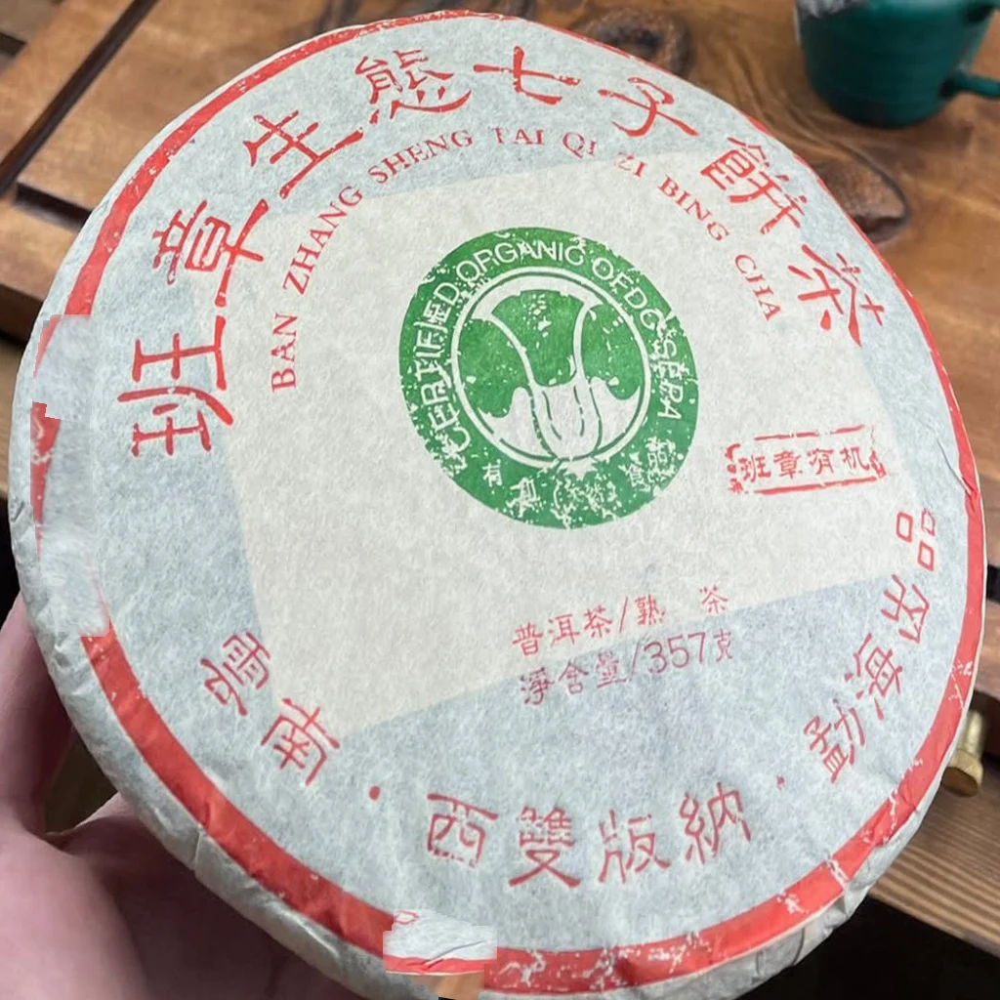
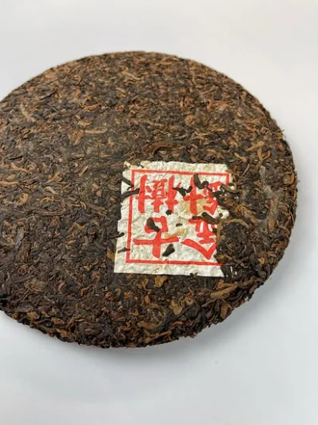
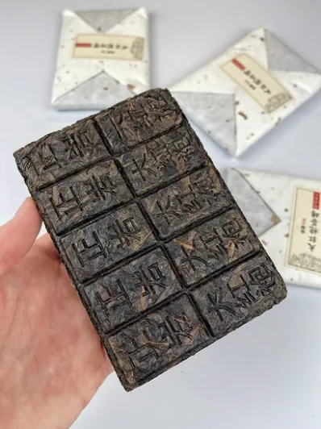
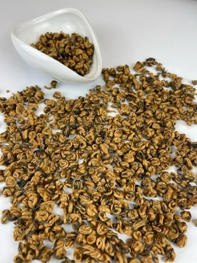
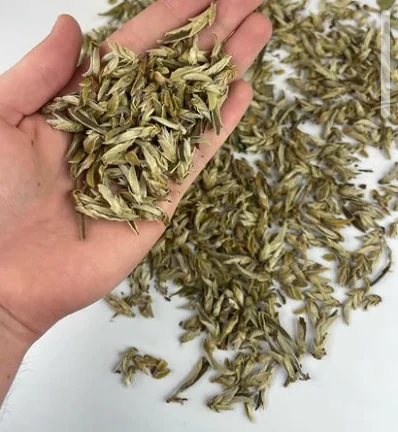
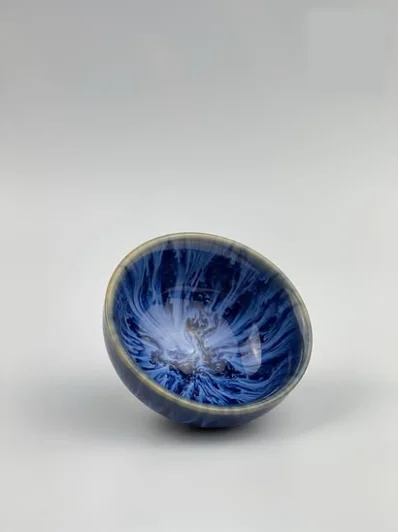
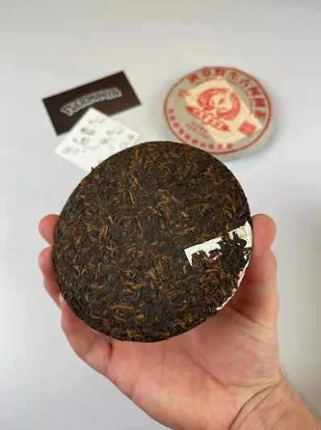
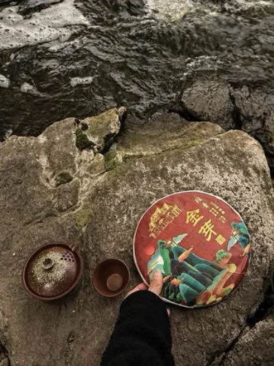
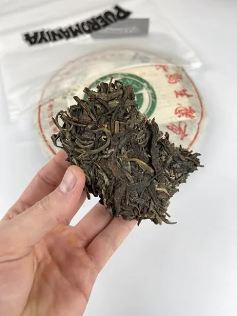

Китайський чай · Юньнань
Чай,
який
заряджає.
Шу та шен пуер, улуни, червоний чай і посуд для чайної церемонії. Замовлення — у Direct.
Каталог
Чай
Обери чай і напиши нам у Direct — підкажемо, що підійде саме тобі, і назвемо актуальну ціну.
-

Шу пуер · блин
Шу пуер класичний
Темний, щільний настій із нотами деревини та сухофруктів.
Запитати в Direct → -

Шен пуер · блин
Шен пуер
Свіжий і яскравий, з легкою терпкістю. Змінюється з роками зберігання.
Запитати в Direct → -

Шен пуер · блин
Шен пуер у листі
Блин, спресований разом із великим листом чайного дерева.
Запитати в Direct → -

Шу пуер · цеглина
Шу пуер у плитці
Плитка з поділками — порцію зручно відламати без ножа.
Запитати в Direct → -

Шу пуер · ча тоу
«Чайні самородки»
Природно злиплі шматочки листя. Густий, солодкуватий настій.
Запитати в Direct → -

Улун
Улун скручений
Щільні гранули, що повільно розкриваються в чайнику.
Запитати в Direct → -

Улун · подарунок
Да Хун Пао
Скельний улун у подарунковій коробці.
Запитати в Direct → -

Червоний чай
«Равлики»
Скручене листя з золотистими типсами, медовий смак.
Запитати в Direct → -

Червоний чай
Золоті голки
Прямі золоті бруньки. М'який і солодкуватий.
Запитати в Direct → -

Білий чай
Білий чай
Делікатний, з квітковими нотами. Для спокійного вечора.
Запитати в Direct →
Ціни та наявність уточнюй у Direct — асортимент постійно оновлюється.
Чайний посуд
Посуд
Гайвані, чайники й чашки ручної роботи. Кожна річ — в одному-кількох екземплярах.

Гайвань з розписом
Запитати →
Чашка з синьою глазур'ю
Запитати →
Чайник «Мох»
Запитати →
Чайник «Дракон»
Запитати →
Чашка з розписом
Запитати →
Чашка «Скарб на дні»
Запитати →
Чай
замість
енергетика.
- Без цукруЛише листя і вода. Жодних сиропів і «зарядів» з банки.
- М'яка бадьорістьЧай п'ють повільно, проливами — це не банка за тридцять секунд.
- Ритуал, що перемикаєДесять хвилин з гайванню — і голова на місці перед тренуванням чи роботою.
Гунфу ча
Як заварити пуер
- 1
Прогрій посуд
Облий гайвань і чашки окропом — так смак розкриється краще.
- 2
5–7 г на 100 мл
Відламай шматочок і поклади в гайвань або чайник.
- 3
Промий чай
Залий окропом на 5 секунд і злий — це пробудить листя.
- 4
Короткі проливи
Перші заварювання — 10–20 секунд, далі поступово довше.
Замовлення
Замовлення —
у Direct.
- Обери чай у каталозі або напиши, який смак тобі подобається.
- Напиши нам у Direct — назву чаю можна скопіювати кнопкою на картці.
- Узгодимо вагу, оплату й доставку.




 @pueromaniya ↗
@pueromaniya ↗